บทนี้เป็น บทปูพื้นของ Data Link Layer (ผศ.ดร.ฐิตินันท์ ตันติธรรม) ทำหน้าที่เป็น "สะพาน" ไปสู่ Lecture 5.1 (error detection) และ 5.2 (flow control)
เรียนว่า data link layer ส่งข้อมูลแบบ hop-by-hop (ทีละลิงก์) ต่างจาก layer บนที่มองแบบ end-to-end, แพ็กเก็ตถูก ใส่ frame ใหม่ทุก hop, บริการหลักและ sublayer LLC/MAC, ตัวอย่างโปรโตคอล, ลิงก์แบบ dedicated vs shared และปิดด้วย framing (byte stuffing, bit stuffing)
ต่อจาก Chapter 1–2 ที่เรียนจากบนลงล่าง ตอนนี้ลงมาถึง Layer 2 แล้ว
1. แผนการเรียน Data Link Layer
| Lecture | ธีม | คำถามหลัก | หัวข้อ |
|---|---|---|---|
| 5.0 Foundation | พื้นฐาน | — | TCP/IP communication model, hop-by-hop delivery, LLC & MAC roles, framing |
| 5.1 Data Integrity | ความถูกต้องของข้อมูล | ผู้รับเชื่อบิตที่ได้รับได้ไหม? | Parity, checksum, CRC, Hamming code, interleaving |
| 5.2 Delivery Control | ควบคุมการส่ง | ผู้ส่งกับผู้รับประสานงานกันได้ไหม? | Flow control, ARQ, HDLC, Stop-and-Wait, GBN, SR |
| 6.1 Medium Access | การเข้าถึงสื่อกลาง | ใครมีสิทธิ์ส่งบนสื่อที่แชร์กัน? | ALOHA, CSMA/CD, CSMA/CA, controlled access, channelization |
| 6.2 Ethernet | รวมทุกแนวคิด | — | Frames & FCS, MAC addresses, switched forwarding, IEEE 802.3 |
| 7 VLAN | ขยาย switched LAN | — | Logical segmentation, access ports, trunks, IEEE 802.1Q |
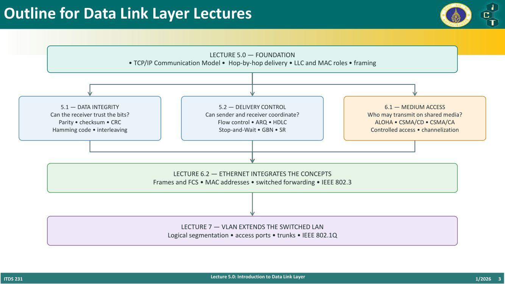
2. TCP/IP Communication Model
ภาพแสดง Alice (sender host) ส่งข้อมูลถึง Bob (receiver host) ผ่าน router R1 และ R2
Encapsulation ที่ Alice:
- Application → Message
- Transport → TCP header + Message = Segment
- Network → IP header + TCP header + Message = Packet
- Data Link → Frame header + … + Frame trailer = Frame
- Physical → Bits (101010…)
การเชื่อมต่อแต่ละชั้น:
| Layer | ประเภทการเชื่อมต่อ | ช่วง |
|---|---|---|
| Application | logical, end-to-end | Alice ↔ Bob |
| Transport | logical, end-to-end | Alice ↔ Bob |
| Network | logical, host-to-host | Alice ↔ Bob |
| Data Link | hop-by-hop | Alice ↔ R1, R1 ↔ R2, R2 ↔ Bob (one hop แต่ละช่วง) |
| Physical | physical connections (point-to-point) | physical link แต่ละช่วง |
ที่แต่ละ router: รับ incoming frame → ถอด data link header & trailer ออก → เหลือ IP packet → ใส่ data link header & trailer ใหม่ → ส่งเป็น bits
Decapsulation ที่ Bob: Bits → Frame → Packet → Segment → Message
Takeaway: layer บนสื่อสาร แบบ logical end-to-end; ส่วน data-link frames และ physical signals ทำงาน hop by hop
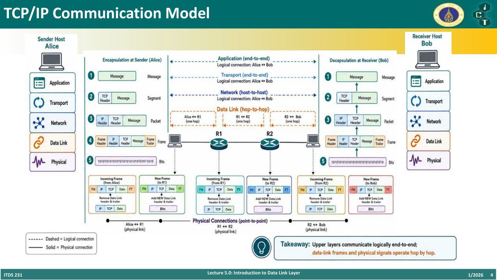
3. Frame Study with Wireshark
- Framing ห่อหุ้ม (encapsulate) network-layer packet เพื่อส่งบน ลิงก์ท้องถิ่น 1 ลิงก์
- Frame header มักมี source และ destination link-layer addresses
- Trailer มักมี frame check sequence (FCS) สำหรับตรวจจับข้อผิดพลาด
- ที่ทุก router frame ขาเข้าจะถูกถอดออก และสร้าง frame ใหม่ สำหรับลิงก์ถัดไป
- ใน Wireshark จะเห็นเช่น
Ethernet II, Src: TpLinkTechno_b9:56:ed, Dst: Intel_9e:b8:0dตามด้วย IPv4, TCP, TLS - ⚠️ Wireshark ปกติไม่แสดง Ethernet preamble, Start Frame Delimiter (SFD) และ FCS (การ์ดเครือข่ายตัดออกก่อน)
- วิดีโอประกอบ: https://www.youtube.com/watch?v=xoJyT78s2UI&t=210s, https://www.youtube.com/watch?v=ITFG4HLpxY8
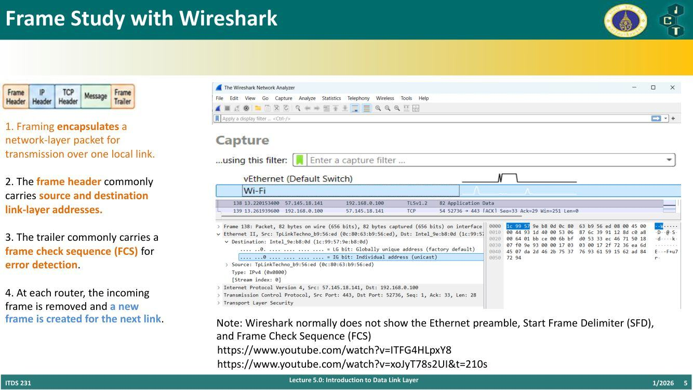
4. Data-Link Layer คือการสื่อสารแบบ Hop-by-Hop ⭐
| มุมมอง | ลักษณะ |
|---|---|
| End-to-end view seen by applications | แอปมองเห็นเป็นเส้นทางเดียว: Node –Link– Node –Link– Node … |
| Hop-by-hop delivery performed by links | จริง ๆ แล้วข้อมูลผ่าน LAN → point-to-point network → LAN → point-to-point network → LAN ทีละช่วง โดยแต่ละช่วง (link) อาจเป็นเทคโนโลยีต่างกัน |
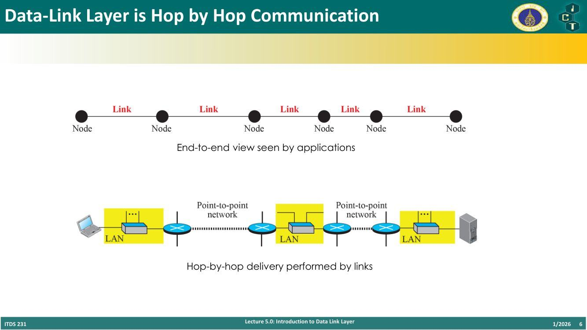
💡 เหมือนส่งพัสดุข้ามจังหวัด: ลูกค้าเห็นแค่ "ส่งจากกรุงเทพถึงเชียงใหม่" (end-to-end) แต่จริง ๆ ต้องผ่านมอเตอร์ไซค์ → รถบรรทุก → รถกระบะ ทีละช่วง (hop-by-hop) แต่ละช่วงใช้ยานพาหนะต่างกัน
5. A Packet Is Reframed at Every Hop ⭐
- Network layer ส่ง IP packet (datagram) ลงมาให้ data link layer
- ผู้ส่ง ห่อ packet ด้วย frame ที่เหมาะกับลิงก์ปัจจุบัน
- ที่ router ถัดไป frame นั้นถูกถอดออก และสร้าง frame ใหม่ สำหรับลิงก์ถัดไป
- Physical layer ส่ง frame เป็นสัญญาณผ่านสื่อกลาง
ภาพ: Source → (Link of type 1, Frame: type 1) → router → (Link of type 2, Frame: type 2) → Destination — datagram เดิม แต่ frame เปลี่ยนตามชนิดลิงก์
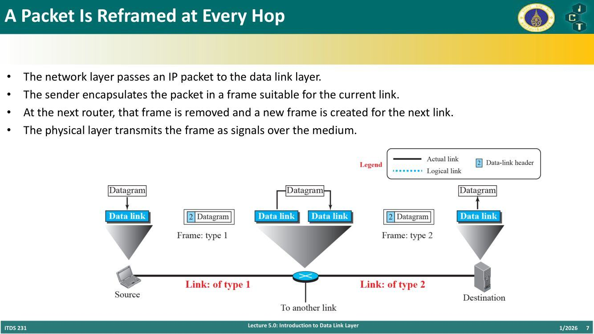
⚠️ IP packet (datagram) ไม่เปลี่ยน ตลอดทาง (ต้นทาง/ปลายทาง IP เดิม) แต่ frame (และ MAC address) เปลี่ยนทุก hop
6. Data Link Layer: Core Services และ Sublayers ⭐
Physical layer ขนส่งบิต ส่วน data link layer จัดระเบียบการส่งข้ามลิงก์ท้องถิ่น 1 ลิงก์
| บริการ | Sublayer / ใครทำ | คำอธิบาย |
|---|---|---|
| Network-layer interface | LLC | multiplex โปรโตคอลชั้นบน (บอกว่าข้อมูลใน frame เป็น IPv4, IPv6, ARP ฯลฯ) |
| Framing | MAC ใน IEEE 802; ทำโดยตรงใน PPP/HDLC | จัดบิตเป็น frame |
| Link addressing | MAC | ระบุอุปกรณ์บนลิงก์ท้องถิ่น |
| Error detection | FCS/CRC ใน MAC หรือ link protocol | ตรวจว่าบิตเสียไหม |
| Error recovery (optional) | — | ACKs และ retransmission |
| Flow control (optional) | — | ควบคุมอัตราการส่งของผู้ส่ง |
| Medium access | MAC | ประสานสถานีที่ใช้สื่อกลางร่วมกัน |
2 Sublayers:
- LLC — Logical Link Control: network-layer interface และ protocol multiplexing (อยู่บน ติดกับ network layer)
- MAC — Media Access Control: frame format, MAC addressing, medium access และ FCS (อยู่ล่าง ติดกับ physical layer)
| Dedicated / full-duplex link | Shared medium |
|---|---|
| ไม่มีการแย่งช่องสัญญาณ (no contention) แต่ยังต้องมี framing และ link functions | MAC ต้องประสาน การเข้าถึงช่องสัญญาณที่แชร์ |
| data-link layer มีแค่ data link control sublayer | data-link layer มี data link control + media access control sublayer |
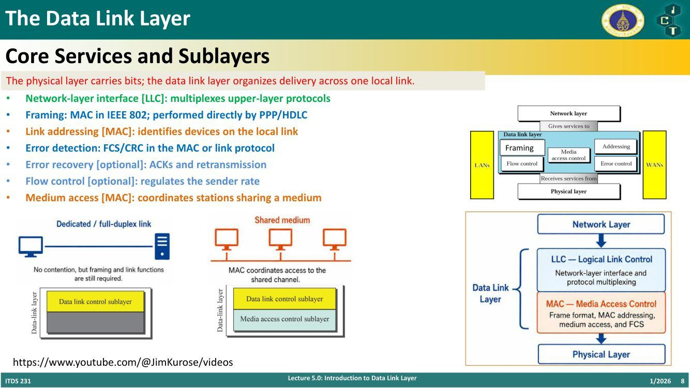
7. Data Link Protocols
| Link type | Example | Architecture | Key link function |
|---|---|---|---|
| Shared LAN | Ethernet 802.3 | LLC/SNAP + MAC | Framing, addressing, FCS |
| Wireless LAN | Wi-Fi 802.11 | LLC/SNAP + MAC | Access, ACK, retransmission |
| Token LAN | Token Ring 802.5 | LLC + MAC | Token access (legacy) |
| Low-power WPAN | IEEE 802.15.4 | Adaptation + MAC | Low-power framing/access |
| Point-to-point | PPP | Single data-link protocol | Framing, LCP/NCP, FCS |
| Point-to-point | HDLC | Single data-link protocol | Framing and link control |
| X.25 WAN | LAPB | Single data-link protocol | Reliable HDLC-derived link |
| Cellular radio | LTE / 5G | System-specific stack | PDCP, RLC, and MAC |
สรุป 2 กลุ่ม:
| IEEE 802 LAN/WLAN | PPP และ HDLC |
|---|---|
| LLC/SNAP: network-layer interface และ multiplexing | เป็น data-link protocol แบบ point-to-point ที่ครบในตัว |
| MAC: framing, addressing, FCS, medium access | ทำ framing โดยตรง; ไม่มีการแบ่ง LLC/MAC แบบ IEEE 802 |
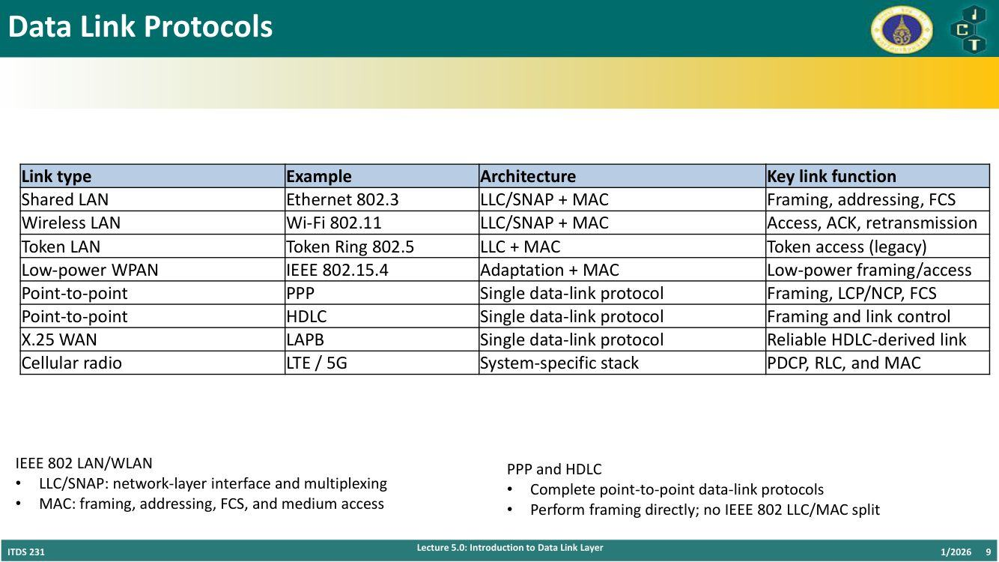
💡 ทำไม PPP/HDLC ไม่ต้องมี MAC sublayer? เพราะเป็นลิงก์ point-to-point มีแค่ 2 ฝั่ง ไม่มีใครมาแย่งใช้สื่อ จึงไม่ต้องมีกลไก medium access
8. Dedicated vs Shared Links
| Dedicated Links | Shared Links |
|---|---|
| Full-duplex switch — Star topology (ทุกเครื่องต่อสายตรงเข้า switch กลาง) | Bus topology (ทุกเครื่องต่อสายเส้นเดียวกัน) |
| Wireless (เช่น Wireless LAN 192.168.0.0/24 ทุกเครื่องแชร์คลื่นเดียวกัน) |
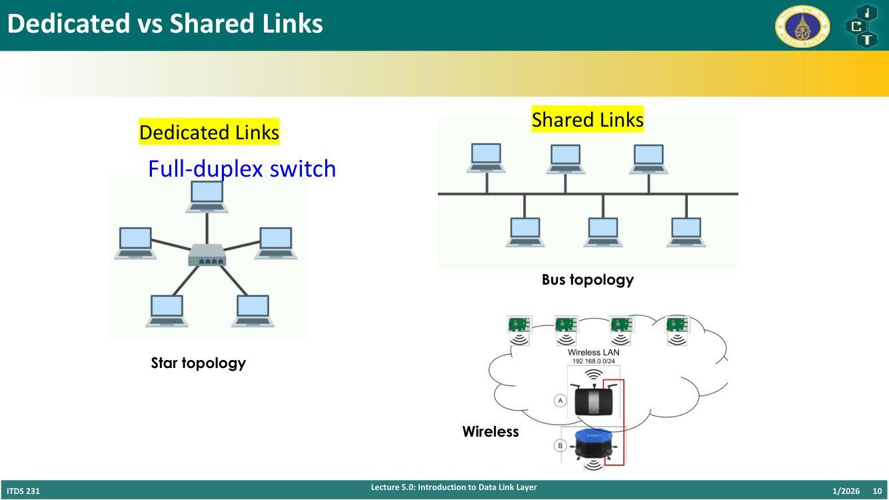
9. Shared Medium สร้างปัญหาการประสานงาน
Multiple Access: เมื่อหลายอุปกรณ์ใช้ช่องสัญญาณเดียวกัน อาจมี มากกว่า 1 สถานีพยายามส่งพร้อมกัน
ตัวอย่างสื่อกลางที่แชร์:
- shared wire (เช่น Ethernet แบบเก่า)
- shared wireless (เช่น Wavelan)
- satellite
- cocktail party (คนหลายคนคุยพร้อมกันในงานเลี้ยง — "Blah, blah, blah" บางคนพูดแทรก บางคนหลับ)
คำถามหลัก: สถานีจะแชร์สื่อกลางอย่าง ยุติธรรม (fairly), มีประสิทธิภาพ (efficiently) และ ชนกันน้อยลง (fewer collisions) ได้อย่างไร?
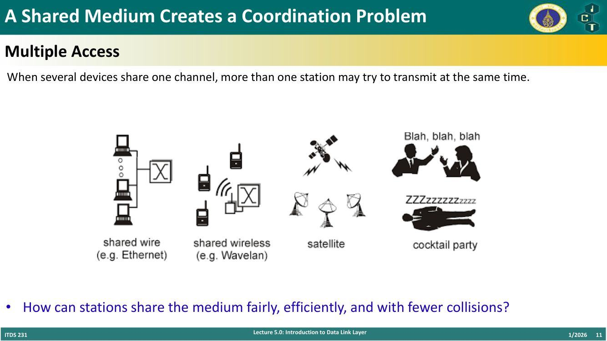
Preview: Media Access Control
- สถานีที่แชร์สื่อกลางต้องมี กฎตัดสินว่าใครส่งได้เมื่อไหร่
- การส่งพร้อมกันอาจ ชนกัน (collide) — ภาพแสดง frame A ที่ ปลายของ B ชนกับต้นของ A และ ปลายของ A ชนกับต้นของ C → Vulnerable time = 2 × T_fr (T_fr = เวลาส่ง 1 frame)
- MAC ประสานการเข้าถึง — Lecture 6.1 จะเรียน contention, controlled access, channelization
ถัดไป: Lecture 5.1 — error detection/correction; Lecture 5.2 — flow control, ARQ, HDLC
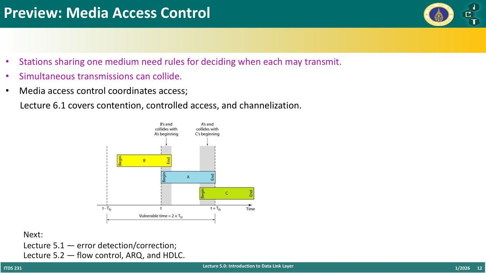
10. Framing — เปลี่ยน bit stream เป็น frames ⭐
- Physical layer ส่ง บิต เป็นสัญญาณผ่านสื่อกลาง
- Data-link layer จัดกลุ่ม bit stream เป็นหน่วยที่ระบุได้ เรียกว่า frames
- แต่ละ frame ต้องบอกขอบเขตของตัวเอง เพื่อให้ผู้รับแยก frame หนึ่งจากอีก frame ได้
- โดยทั่วไป frame มี header, payload, trailer (ฟิลด์จริงขึ้นกับโปรโตคอล)
- Trailer มักมี FCS ไว้ตรวจจับข้อผิดพลาดระหว่างส่ง
Generic frame diagram:
| Flag | Address | Control | Data (information) | FCS | Flag |
|---|
💡 Analogy: frame เหมือน ซองจดหมาย — ซองแยกจดหมายฉบับหนึ่งจากอีกฉบับ, header ให้ข้อมูลการจัดส่ง (ที่อยู่), FCS เหมือนการตรวจสอบว่าของข้างในเสียหายระหว่างทางหรือไม่
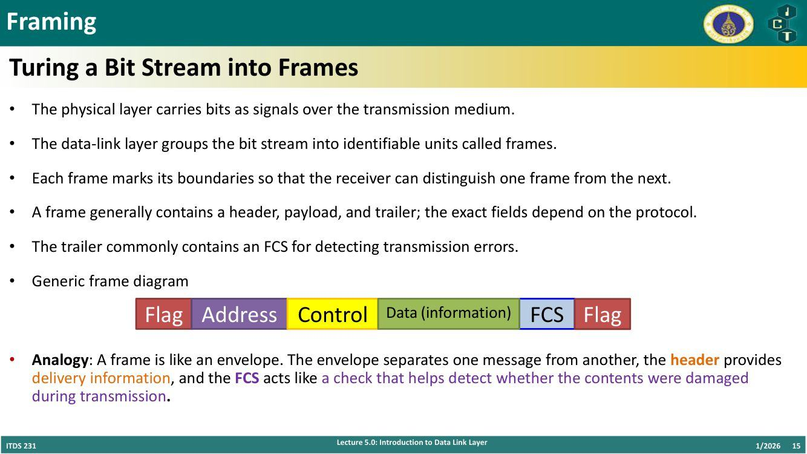
Framing มี 2 ประเภทหลัก
| Character-oriented (byte-oriented) | Bit-oriented |
|---|---|
| ข้อมูลเป็น ตัวอักษร 8 บิต จากระบบรหัสเช่น ASCII | ส่วนข้อมูลเป็น ลำดับบิต ที่ชั้นบนตีความเป็น text, graphic, audio, video ฯลฯ |
| ตัวอย่าง: serial protocols เช่น UART, PPP, Modbus, Bisync | ตัวอย่าง: HDLC, SDLC, CAN (Controller Area Network), Frame Relay, ATM, X.25 |
11. Byte (Character)-Oriented Framing และ Byte Stuffing ⭐
ลักษณะ:
- ข้อมูลเป็นตัวอักษร 8 บิต (เช่น ASCII)
- ใช้ในยุคที่ data-link layer แลกเปลี่ยน เฉพาะข้อความ (text)
ข้อจำกัด:
- ส่งข้อมูลรูปแบบอื่น (graphics, audio, video) มีปัญหา
- ถ้า flag เป็นแพทเทิร์นตัวอักษรเฉพาะ แล้ว แพทเทิร์นเดียวกันโผล่มาในข้อมูล ต้องใช้ escape character (ESC) เพื่อบอกว่า "นี่ไม่ใช่ flag" → เรียกว่า byte stuffing
- ระบบรหัสสากลปัจจุบันอย่าง Unicode มีตัวอักษร 16 และ 32 บิต ซึ่ง ขัดกับตัวอักษร 8 บิต
Byte Stuffing (ตัวอย่าง PPP)
จุดประสงค์: ทำให้ flag pattern ที่อยู่ในข้อมูล ไม่ถูกอ่านเป็น control flag
นิยาม: Byte stuffing = การ เพิ่ม 1 ไบต์พิเศษ (ESC) ทุกครั้งที่มี flag หรือ escape character อยู่ในข้อความ
ขั้นตอนตามภาพ:
- Data from upper layer:
… Flag … ESC …(ในข้อมูลมีไบต์ที่หน้าตาเหมือน Flag และ ESC) - Stuffed (Sent frame):
Flag | Header | … ESC Flag … ESC ESC … | Trailer | Flag→ ใส่ ESC หน้า Flag ที่อยู่ในข้อมูล และใส่ ESC หน้า ESC ที่อยู่ในข้อมูล (extra byte 2 ตัว) - Received frame: เหมือนที่ส่ง
- Unstuffed (Data to upper layer): ผู้รับลบ ESC ที่ใส่เพิ่มออก ได้
… Flag … ESC …เหมือนเดิม
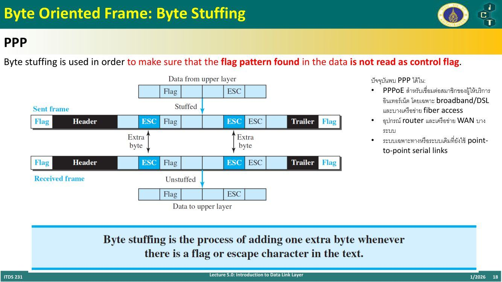
⚠️ ทำไมต้อง stuff ESC ที่อยู่ในข้อมูลด้วย? ถ้าไม่ทำ ผู้รับจะเข้าใจว่า ESC นั้นเป็นตัว escape ของไบต์ถัดไป แล้วลบทิ้งผิด
ปัจจุบันพบ PPP ได้ใน:
- PPPoE สำหรับเชื่อมต่อสมาชิกของผู้ให้บริการอินเทอร์เน็ต โดยเฉพาะ broadband/DSL และบางเครือข่าย fiber access
- อุปกรณ์ router และเครือข่าย WAN บางระบบ
- ระบบเฉพาะทางหรือระบบเดิมที่ยังใช้ point-to-point serial links
12. Bit-Oriented Framing และ Bit Stuffing (HDLC) ⭐
HDLC Flag = 0x7E = 01111110
จุดประสงค์: ทำให้ flag pattern ที่อยู่ในข้อมูล ไม่ถูกอ่านเป็น control flag
นิยาม: Bit stuffing = การ เพิ่ม 0 หนึ่งตัว ทุกครั้งที่มี 1 ติดกัน 5 ตัว ตามหลัง 0 ในข้อมูล เพื่อไม่ให้ผู้รับเข้าใจผิดว่าแพทเทิร์น 01111110 เป็น flag
ตัวอย่างจากสไลด์:
| ขั้นตอน | บิต |
|---|---|
| Data from upper layer | 0001111111001111101000 |
| Stuffed (Frame sent) | 000111110110011111001000 → 000111110110011111001000 |
| Frame received | เหมือน frame sent |
| Unstuffed (Data to upper layer) | 0001111111001111101000 |
ไล่ทีละช่วง:
- ข้อมูล:
0001111111001111101000 - เจอ 1 ติดกัน 5 ตัวครั้งแรก → แทรก
0→000 11111 0 1100 … - เจอ 1 ติดกัน 5 ตัวอีกครั้ง → แทรก
0อีกตัว →… 1100 11111 0 01000 - ผลลัพธ์:
000111110110011111001000(เพิ่ม 2 บิต — "Two extra bits") - ผู้รับ: เมื่อเจอ
0+11111แล้วตามด้วย0→ ลบ 0 นั้นทิ้ง
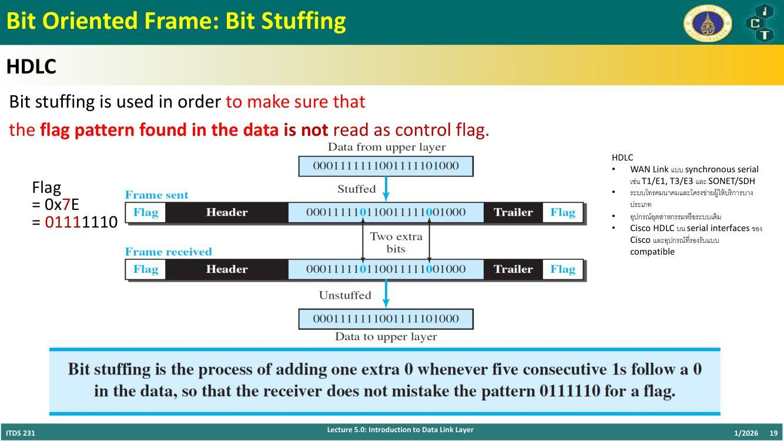
💡 ทำไมเลข 5? เพราะ flag มี 1 ติดกัน 6 ตัว (
01111110) ถ้าเราไม่ยอมให้ข้อมูลมี 1 ติดกันเกิน 5 ตัว ข้อมูลก็จะไม่มีวันหน้าตาเหมือน flag
ปัจจุบันพบ HDLC ได้ใน:
- WAN link แบบ synchronous serial เช่น T1/E1, T3/E3 และ SONET/SDH
- ระบบโทรคมนาคมและโครงข่ายผู้ให้บริการบางประเภท
- อุปกรณ์อุตสาหกรรมหรือระบบเดิม
- Cisco HDLC บน serial interfaces ของ Cisco และอุปกรณ์ที่รองรับแบบ compatible
13. เปรียบเทียบวิธี Framing ⭐
| Feature | Byte-Oriented Framing | Bit-Oriented Framing | Length/Fixed-Size Framing (Frame-Oriented) |
|---|---|---|---|
| Frame boundary | special delimiter bytes | special flag bit pattern | length field, fixed size หรือ PHY synchronization |
| Data transparency | byte/octet stuffing | bit stuffing | ปกติ ไม่ต้อง stuff delimiter |
| Example protocols | BISYNC, SLIP, asynchronous PPP | HDLC, synchronous PPP, Frame Relay, CAN | Ethernet, IEEE 802.11, ATM cells |
| Stuffing rule | escape special bytes ใน payload | แทรก 0 หลัง 1 ติดกันตามจำนวนที่กำหนด | ไม่ stuff เพื่อแบ่ง frame; อาจต้อง padding |
| Overhead | escape bytes ขึ้นกับข้อมูล | stuffed bits ขึ้นกับข้อมูล | header/trailer คาดการณ์ได้เกือบทั้งหมด |
| Key advantage | ประมวลผลง่ายบนลิงก์แบบ byte | ไม่ขึ้นกับ character encoding | มีประสิทธิภาพ เหมาะกับ LAN ความเร็วสูง |
หมายเหตุ:
- UART ใช้ start/stop bits
- I²C ใช้ START/STOP conditions
- SPI ไม่ได้กำหนดรูปแบบ frame มาตรฐานเดียว
- ⚠️ Ethernet padding ไม่ใช่ stuffing — padding ใช้ทำให้ frame มี ขนาดขั้นต่ำ ไม่ได้ใช้ป้องกันไม่ให้ payload ถูกเข้าใจว่าเป็น delimiter
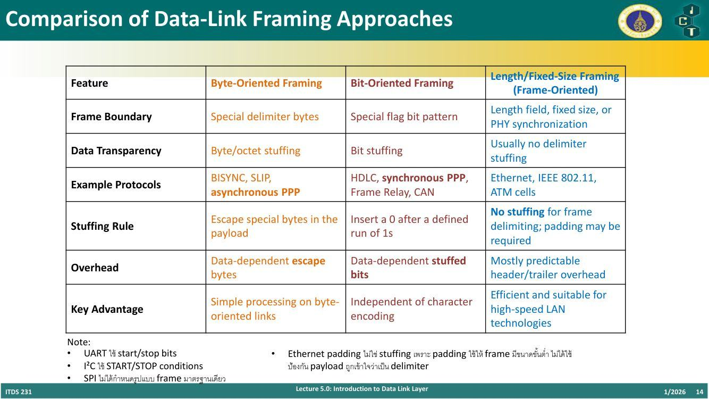
14. คำศัพท์สำคัญ
| คำศัพท์ | ความหมาย | จำง่าย ๆ ว่า |
|---|---|---|
| Hop-by-hop | ส่งทีละลิงก์ระหว่างโหนดที่ติดกัน | ส่งพัสดุทีละช่วง |
| End-to-end | มุมมองต้นทางถึงปลายทาง (layer บน) | |
| Reframing | ถอด frame เดิม ใส่ frame ใหม่ที่ทุก router | IP เดิม frame ใหม่ |
| Frame | หน่วยข้อมูลของ data link (header + payload + trailer) | ซองจดหมาย |
| FCS | Frame Check Sequence ใน trailer ตรวจ error (มักเป็น CRC) | |
| Preamble / SFD | ส่วนหน้าของ Ethernet frame (Wireshark ไม่แสดง) | |
| LLC | Logical Link Control — interface กับ network layer, multiplexing | ชั้นบน |
| MAC (sublayer) | Media Access Control — frame format, addressing, medium access, FCS | ชั้นล่าง |
| SNAP | ส่วนขยายของ LLC ใช้ระบุโปรโตคอลชั้นบน | |
| PPP | Point-to-Point Protocol, byte-oriented (async), ทำ framing เอง | PPPoE |
| HDLC | High-level Data Link Control, bit-oriented, flag 01111110 | Cisco serial |
| LCP / NCP | Link Control Protocol / Network Control Protocol ของ PPP | |
| Dedicated link | ลิงก์ส่วนตัว เช่น full-duplex switch (star) | ไม่แย่ง |
| Shared link | สื่อกลางที่แชร์ เช่น bus, wireless | ต้องมี MAC |
| Multiple access | ปัญหาหลายสถานีส่งพร้อมกันบนสื่อเดียว | cocktail party |
| Vulnerable time | ช่วงเวลาที่ frame อาจถูกชน = 2 × T_fr (ALOHA) | |
| Byte-oriented framing | frame เป็นตัวอักษร 8 บิต ใช้ delimiter byte | |
| Byte stuffing | ใส่ ESC หน้า flag/ESC ที่อยู่ในข้อมูล | |
| Bit-oriented framing | frame เป็นลำดับบิต ใช้ flag pattern | |
| Bit stuffing | แทรก 0 หลัง 1 ติดกัน 5 ตัว | |
| Length/fixed-size framing | ใช้ length field หรือขนาดคงที่ (Ethernet, 802.11, ATM) | |
| Padding | เติมให้ frame ถึงขนาดขั้นต่ำ (ไม่ใช่ stuffing) |
15. สรุปท้ายบท / จุดที่มักออกสอบ
- Layer บน = logical end-to-end; data link + physical = hop-by-hop
- Encapsulation units: Message → Segment → Packet → Frame → Bits
- ทุก router ถอด frame เดิมแล้วสร้าง frame ใหม่ — IP packet เดิม, frame เปลี่ยนตามชนิดลิงก์
- Header มี source/destination link-layer address; trailer มี FCS; Wireshark ไม่แสดง preamble, SFD, FCS
- บริการ data link: network-layer interface (LLC), framing, link addressing (MAC), error detection, error recovery (optional), flow control (optional), medium access (MAC)
- LLC = interface/multiplexing, MAC = frame format + addressing + medium access + FCS
- IEEE 802 (Ethernet, Wi-Fi) แบ่ง LLC/SNAP + MAC; PPP/HDLC เป็น single data-link protocol ทำ framing เอง ไม่แบ่ง LLC/MAC
- Dedicated (full-duplex switch, star) ไม่มี contention แต่ยังต้อง framing; Shared (bus, wireless) ต้องมี MAC
- Multiple access problem: ส่งพร้อมกัน → collision; ต้องแชร์อย่าง fair, efficient, fewer collisions
- Framing ต้องบอกขอบเขต frame; generic frame: Flag | Address | Control | Data | FCS | Flag
- Byte-oriented (UART, PPP, Modbus, Bisync) — ข้อจำกัด: ส่งข้อมูลไม่ใช่ข้อความยาก, flag ซ้ำในข้อมูล, Unicode 16/32 บิต
- Byte stuffing: เพิ่ม ESC 1 ไบต์ทุกครั้งที่เจอ flag หรือ ESC ในข้อมูล
- Bit-oriented (HDLC, SDLC, CAN, Frame Relay, ATM, X.25); flag HDLC = 0x7E = 01111110
- Bit stuffing: แทรก 0 หลังเจอ 0 ตามด้วย 1 ห้าตัว — ฝึกทำโจทย์ stuff/unstuff
- ตารางเปรียบเทียบ 3 แบบ: byte / bit / length-fixed (Ethernet, 802.11, ATM ไม่ต้อง stuffing แต่อาจ padding)
- Ethernet padding ≠ stuffing
- PPP ปัจจุบัน: PPPoE (broadband/DSL); HDLC ปัจจุบัน: synchronous serial WAN (T1/E1, SONET/SDH), Cisco HDLC